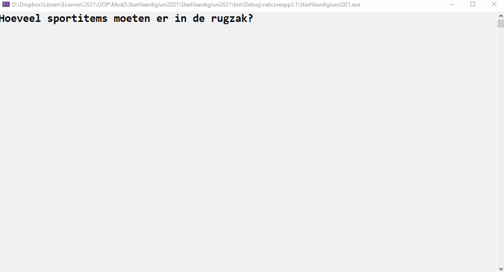

Volgende opgave was de vaardigheidsproefopdracht voor het 1e zit examen van dit vak (OOP) in juni 2021
Introductie
De sportleraar is nogal slordig. Hij verliest altijd zijn dure drinkbussen. De school heeft daarom jouw diensten ingehuurd om een deel van het materiaal eenvoudig terug te vinden.
Volgende filmpje toont de volledige werking van de applicatie:

Context
Een sportleraar kan een rugzak met 2 soorten items vullen:
- Niet trackable items (ballen, fluitje, etc).
- Drinkbussen die wel getrackt kunnen worden.
De rugzak zelf is ook trackable en zal zelfs kunnen aangeven op welke hoogte deze zich bevindt.
Om het leuk te maken zullen de posities van de trackable items (drinkbussen en rugzakken) telkens veranderen wanneer je ze aanroept.
De spullen die je in een rugzak plaats zullen zich in het progamma niet op dezelfde locatie als de rugzak zelf bevinden, daar alle trackable elementen (rugzak en drink) steeds nieuwe willekeurige locaties krijgen (beeld je in dat de leraar de rugzak vult, ermee naar het park vertrekt, uitlaadt en nu geraken alle spulletjes zoek in het park)
De nodige klassen
GPSLocation
Maak een klasse GPSLocation met volgende zaken:
- 2 autoproperties, type int, genaamd
LatitudeenLongitude - Een overloaded constructor waarmee je de Latitude en Longitude kunt instellen.
- Een default constructor die de Latitude en Longitude instelt op telkens een random getal tussen 1 en 9.
ToStringwordt overschreven en output het object als volgtLatitude: 4, Longitude: 6(met de getallen natuurlijk de effectieve waarde van de properties van dat object).
AdvancedGPSLocation
Maak een klasse AdvancedGPSLocation. Deze klasse is een GPSLocation met als extra’s:
- Een autoproperty
Heigth. - Een overloaded constructor die niet naast Latitude en Longitude ook de Height vereist.
- Een default constructor die standaard de hoogte op 1 zet en de Longitude en Latitude instels op telkens een random getal tussen 1 en 9.
ToStringtoont ook de hoogte nu, bijvoorbeeld:Latitude: 4, Longitude: 6, Height: 5.
ITrackable
Maak een interface ITrackable die één methode GetCurrentLocation bevat, die een GPSLocation als returntype heeft en geen parameters verwacht.
SportItem
Een klasse die enkel ToString overschrijft om de tekst "een eenvoudig sportitem" terug te geven.
Drinkbus
Maak een klasse Drinkbusdie een SportItem is en die de ITrackable interface implementeert.
Een drinkbus zal steeds een nieuwe willekeurige locatie teruggeven bij GetCurrentLocation en zal in ToString de tekst "een drinkbus" teruggeven.
Rugzak
Maak een klasse Rugzak die de ITrackable interface implementeert.
- De klasse geeft een nieuwe willekeurige
AdvancedGPSLocationterug telkensGetCurrentLocationwordt aangeroepen. - De klasse heeft een
Dictionaryvan sportitems (de rugzakinhoud) waarbij een string als key van ieder item zal gehanteerd worden. - De rugzakinhoud (de Dictionary) is bereikbaar via een full property.
- De klasse overschrijft
ToStringzodat informatie als volgt op het scherm verschijnt (onderaan voorbeeld). Tip:Gebruik maximaal deToString-methode van objecten:- Eerst wordt er een zin gegeven die de huidige locatie van de rugzak toont.
- Vervolgens wordt ieder sportitem in de rugzak onder elkaar geschreven (met de tostring van ieder sportitem) en de key.
- Indien een sportitem in de rugzak
ITrackableheeft dan zal de locatie van het sportitem metGetCurentLocationaangeroepen worden om ook deze informatie te tonen.
Een voorbeeld van de ToString methode output van een rugzak met daarin een drinkbus en een gewoon sportitem:
Rugzak op locatie: Latitude:1, Longitude:9, Height:1
Met inhoud:
mijndrinkbus (Een drinkbus)
-Laatste locatie is Latitude:3, Longitude:5
bal (Een eenvoudig sportitem)
-Geen tracker aanwezig(mijndrinkbus en bal zijn de keys van ieder sportitem)
- De klasse heeft een methode
Visualiseerwanneer deze wordt aangeroepen (geen parameters) zal deze de inhoud van de rugzak én de rugzak zelf op het scherm tonen aan de hand van lettertjes, als volgt:- De GPSLocation coordinaten (Latitude en Longitude) stellen de coordinaten voor waar op het scherm het element komt (Latitude geeft de kolom weer, Longitude de rij in de console). Op die plek zet je een letter:
rvoor een rugzakDvoor een drinkbus
- Merk op dat deze methode telkens een andere ‘kaart’ zal tonen, daar de GPSlocaties bij iedere aanroep van GetCurrentLocation veranderen (willekeurig).
- Indien meerdere elementen op dezelfde locatie staan dan wordt gewoon 1 letter getoond (van het laatste element dat op deze plek diende gevisualiseerd te worden).
- De GPSLocation coordinaten (Latitude en Longitude) stellen de coordinaten voor waar op het scherm het element komt (Latitude geeft de kolom weer, Longitude de rij in de console). Op die plek zet je een letter:
Een voorbeeld van de uitvoer van de Visualiseer-methode indien we een rugzak hebben op locatie (2,3), met daarin 1 drinkbus op (4,4) en 1 drinkbus op (5,6):
r
D
DMain
Schrijf een applicatie die als volgt werkt:
- Maak een nieuwe rugzak aan.
- Vraag aan de gebruiker hoeveel sportitems in de rugzak moeten komen.
- Per sportitem dat in de rugzak komt maak je een willekeurig sportitem aan (
SportItemofDrinkbus, beide 50% kans om gekozen te worden) en vraag je vervolgens de key waarmee dit sportitem in de rugzak-dictionary moet bewaard worden. - Vervolgens start er een loop die oneindig blijft doorlopen die telkens:
- Het scherm leegmaakt
- De inhoud van de rugzak op het scherm toont in tekstvorm (via
ToString) - Wacht tot de gebruiker op enter duwt.
- Het scherm leegmaakt
- De
Visualiseermethode van de rugzak aanroept. - Wacht tot de gebruiker op enter duwt.
Merk op dat de locaties die in stap 2 getoond worden niet overeenkomen met de locaties die bij de visualisatie in stap 5 worden gebruikt.
class GPSLocation
{
static Random rng = new Random();
public GPSLocation(): this(rng.Next(1,10), rng.Next(1,10))
{
}
public GPSLocation(int lat, int lon)
{
Latitude = lat;
Longitude = lon;
}
public int Latitude { get; set; }
public int Longitude { get; set; }
public override string ToString()
{
return $"Latitude:{Latitude}, Longitude:{Longitude}";
}
}class AdvancedGPSLocation: GPSLocation
{
public AdvancedGPSLocation():base()
{
Height = 1;
}
public AdvancedGPSLocation(int lat, int lon, int h): base(lat, lon)
{
Height = h;
}
public int Height { get; set; }
public override string ToString()
{
return $"{base.ToString()}, Height:{Height}";
}
}interface ITrackable
{
GPSLocation GetCurrentLocation();
}class SportItem
{
public override string ToString()
{
return "een eenvoudig sportitem";
}
}class Drinkbus : SportItem, ITrackable
{
public GPSLocation GetCurrentLocation()
{
return new GPSLocation();
}
public override string ToString()
{
return "een drinkbus";
}
}class Rugzak : ITrackable
{
public GPSLocation GetCurrentLocation()
{
return new AdvancedGPSLocation();
}
private Dictionary<string, SportItem> inhoud = new Dictionary<string, SportItem>();
public Dictionary<string, SportItem> Inhoud
{
get { return inhoud; }
set { inhoud = value; }
}
public override string ToString()
{
string result =$"Rugzak op locatie: {GetCurrentLocation()} \n Met inhoud:";
foreach (var item in inhoud)
{
result += $"\n\t\t{item.Key} ({item.Value})";
if (item.Value is ITrackable)
{
result += "\n\t\t\t-Laatste locatie is " + ((ITrackable)item.Value).GetCurrentLocation();
}
else
result += "\n\t\t\t-Geen tracker aanwezig";
}
return result;
}
public void Visualiseer()
{
var loc = GetCurrentLocation();
Console.SetCursorPosition(loc.Latitude, loc.Latitude);
Console.Write("r");
foreach (var item in inhoud)
{
if(item.Value is Drinkbus)
{
var locw = (item.Value as Drinkbus).GetCurrentLocation();
Console.SetCursorPosition(locw.Latitude, locw.Latitude);
Console.Write("D");
}
}
}
}class Program
{
static void Main(string[] args)
{
Rugzak r = new Rugzak();
Console.WriteLine("Hoeveel sportitems moeten er in de rugzak?");
int am = int.Parse(Console.ReadLine());
Random rng = new Random();
for (int i = 0; i < am; i++)
{
SportItem toadd;
if (rng.Next(0, 2) == 0)
toadd = new SportItem();
else
toadd = new Drinkbus();
Console.WriteLine($"Ik koos {toadd} voor je. Welke key moet dit krijgen?");
r.Inhoud.Add(Console.ReadLine(), toadd);
}
Console.WriteLine("Klaar. Druk op enter telkens hierna om nieuwe visualisatie te doen");
Console.ReadLine();
while(true)
{
Console.Clear();
Console.WriteLine(r);
Console.ReadLine();
Console.Clear();
r.Visualiseer();
Console.ReadLine();
}
}
}